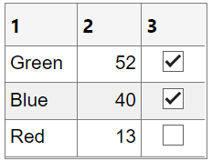
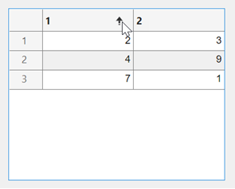
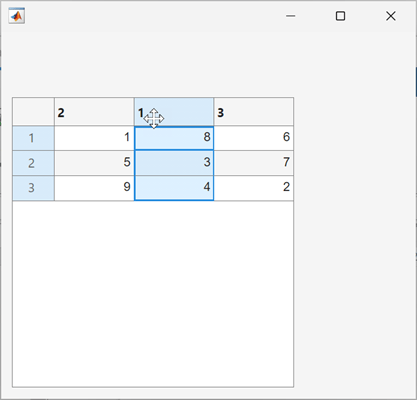
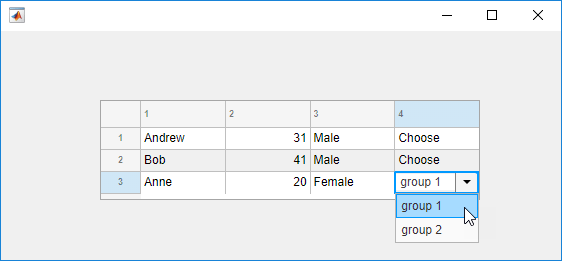
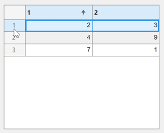
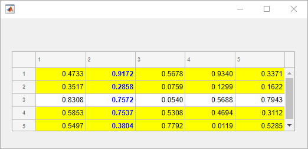

Table
Table UI component
- 
Description
Table UI components display rows and columns of data in an app. Use the
Table object to modify the appearance and behavior of a table after you
create it.
Creation
Create a table in an app using the uitable function.
Properties
Table
Table data, specified as one of the following types of array:
Table array — Displays any combination of data types that
tablearrays support, such asdatetime,duration, andcategorical.Numeric array — Displays numeric values such as
doubleorsingle.Logical array — Displays check boxes.
truevalues correspond to selected boxes, whereasfalsevalues display cleared boxes.Cell array — Displays any combination of numeric, logical, or character array values.
String array — Displays characters and text.
Cell array of character vectors — Displays characters and text.
To prevent warnings or NaN values that display when users enter invalid data into an editable cell, write a CellEditCallback function to convert the data to the appropriate type. When a user edits a cell, the Data property updates.
Specify a Table Array
You can specify the Data property as a table array. Table arrays provide
a convenient way to store tabular data as a MATLAB® variable. The table, readtable, and array2table functions create table
arrays. By contrast, the uitable function creates a
Table UI component (a user interface component for an
app).
When you specify the Data property of a Table UI component as a table array, then MATLAB sets the format of the Table UI component automatically based on the values in the table array:
By default, the column names displayed in the app match the
VariableNamesproperty of the table array. Changing theColumnNameproperty of theTableUI component updates the UI, but it does not update the variable names in the table array.By default, the row names displayed in the app match the
RowNameproperty of the table array. Changing theRowNameproperty of theTableUI component updates the UI, but it does not update the row names in the table array.The data type of each table array variable controls formatting for the corresponding column in the app. If you try to set the
ColumnFormatproperty, MATLAB returns a warning.
For more information on displaying table array data, see Format Tabular Data in Apps.
Specify Numeric, Logical, Cell, String Array, or Cell Array of Character Vectors
Use the ColumnFormat property to specify the format for data that is a
numeric, logical, cell, or string array, or a cell array of character vectors. If
data is edited and results in a mismatch between the data type of the data and the
ColumnFormat property, MATLAB converts the data or displays a warning. See the ColumnFormat property
description for more information.
This property is read-only.
Table data in the current display, returned as a table, numeric, logical, cell, or string array, or as a cell array of character vectors.
Use this property if you want to update your visualizations based on whether a user has sorted or rearranged columns or edited cells in a table.
MATLAB updates DisplayData when table columns are sorted
or rearranged, or when cells are edited. If a user does not sort or rearrange columns,
then DisplayData has the same content as the
Data property. When a user edits a cell, MATLAB updates both the Data and
DisplayData properties.
Example: Difference Between Data and DisplayData
Create a table UI component with some data and with sortable columns. Then, sort the table by the values in the first column.
fig = uifigure; tbl = uitable(fig,Data=[4 9; 7 1; 2 3],ColumnSortable=true);

Query the Data property and the
DisplayData property of the table. The
Data property returns the original table data before the
table was sorted.
tbl.Data
ans =
4 9
7 1
2 3The DisplayData property returns the table data as it
appears in the app.
tbl.DisplayData
ans =
2 3
4 9
7 1Column names, specified as one of these values:
'numbered'— The column headings are sequential numbers that start at1.Cell array of character vectors, string array, or categorical array — Each element of the array becomes the name of a column. If you specify a 1-by-
ncell array, MATLAB stores and returns the value as ann-by-1 cell array. If you specify anm-by-narray, MATLAB reshapes the array into a column vector. Specify a multiline column name by including a vertical slash (|) in the column name. For example, the value'Telephone|Number'produces a column heading with a newline character between the words “Telephone” and “Number”.Empty cell array (
{}) — The table has no column headings.Empty matrix (
[]) — The table has no column headings.
If the number of columns in the Data property array does not
match the number of elements in the ColumnName array, then the
number of columns in the resulting table is the larger of the two values.
If you specify the Data property as a table array, then the
default column names match the VariableNames property of the
table array. Changing the ColumnName property of the
Table UI component updates the UI, but it will not update the
variable names in the table array.
Example: uit =
uitable(uifigure,'ColumnName',{'Name';'Number'},'Data',{'Bob',5})
Example: uit =
uitable(uifigure,'ColumnName',{'Name';[]},'Data',{'Bob',5})
Width of table columns, specified as 'auto', '1x',
'fit', or as a 1-by-n cell
array of character vectors, strings, and numeric values.
Automatic widths — Specify
'auto'to have MATLAB calculate the widths of the columns automatically using several factors, one of which is theColumnNameproperty value.Fit widths to content — Specify a value of
'fit'to configure columns to strictly adjust widths to fit column names and data. This setting allows narrower columns than'auto'does.Uniform widths — Specify a value of
'1x'to make all columns the same width, dividing the available space equally.Fixed widths — Specify a cell array of numeric values that define the column widths in pixel units.
Combinations — You can combine fixed and variable column widths in a cell array. Each element in the cell array corresponds to a column in the table. If the cell array you specify has fewer values than the number of columns, then the columns with no specified value keep the default value of
'auto'. If the array has more values than the number of columns, MATLAB ignores the extra values.Weighted variable widths — Specify a cell array with character vectors or strings composed of a number concatenated with an
'x'(for example,'2x','3x', etc.). The x-factor of each column sets that column width proportionally with respect to the others, with consideration for the remaining space in the UI table.
If a user interactively resizes a table column in a running app, the resized column
width persists even if you later update the ColumnWidth
property.
Example: uit = uitable(uifigure,'ColumnWidth','auto','Data',[1 2 3;4 5 6])
Example: uit = uitable(uifigure,'ColumnWidth','fit','Data',[1 2 3;4 5 6])
Example: uit = uitable(uifigure,'ColumnWidth',{64,60,40},'Data',[1 2 3;4 5 6])
Example: uit = uitable(uifigure,'ColumnWidth',{'2x','1x','1x'},'Data',[1 2 3;4 5 6])
Example: uit = uitable(uifigure,'ColumnWidth',{64,"auto",40},'Data',[1 2 3;4 5 6])
Example: uit = uitable(uifigure,'ColumnWidth',{'fit','1x','3x'},'Data',[1 2 3;4 5 6])
Ability to edit column cells, specified as:
An empty logical array (
[]) — No columns are editable.A logical 1-by-
narray — This array specifies which columns are editable. The value ofnis equal to the number of columns in the table. Each value in the array corresponds to a table column. A value oftruein the array makes the cells in that column editable. A value offalsemakes the cells in that column uneditable. If the array has more values than the number of columns, MATLAB ignores the excess values. If the array has fewer values than the number of columns, then the columns with no specified value are not editable.A logical scalar — The entire table is editable or uneditable.
When a user edits a cell, the Data property updates.
Example: uit = uitable(uifigure,'Data',rand(10,3),'ColumnEditable',[false true true])
Example: uit = uitable(uifigure,'Data',rand(10,3),'ColumnEditable',false)
To enable users to interact with the controls in table columns that contain check boxes or pop-up menus, set the ColumnEditable property to true.
If the Data property is a table array, then any variables that are multicolumn or contain non-editable data types, like duration, are not editable in the running app even when the ColumnEditable property is true. Table array variables that contain mixed data types in a cell array are editable in the running app, as long as the data types are editable.
Ability to sort columns, specified as:
An empty logical array (
[]) — No columns are sortable.A logical 1-by-
narray — This array specifies which columns are sortable. The value ofnis equal to the number of columns in the table. Each value in the array corresponds to a table column. A value oftruein the array makes that column sortable. A value offalsemakes that column unsortable. If the array has more values than the number of columns, MATLAB ignores the excess values. If the array has fewer values than the number of columns, then the columns that do not have specified values are not sortable.A logical scalar — The entire table is sortable (
true) or unsortable (false).
Example: uit = uitable(uifigure,'Data',rand(3),'ColumnSortable',[true true
false]);
Example: uit =
uitable(uifigure,'Data',rand(5),'ColumnSortable',true);
If the Data property contains cell array data or table array
data with cell array columns, then only columns with uniform data types are sortable
in the running app. Cell array columns with nonuniform data types cannot be sorted in
the running app, even when the ColumnSortable property is
true.
Ability to rearrange table columns, specified as 'on' or
'off', or as numeric or logical 1
(true) or 0 (false). A
value of 'on' is equivalent to true, and
'off' is equivalent to false. Thus, you can
use the value of this property as a logical value. The value is stored as an on/off
logical value of type matlab.lang.OnOffSwitchState.
When the value of ColumnRearrangeable is
'on', app users can reorder the table columns by clicking and
dragging the column headers.
Rearranging table columns in the app does not affect the columns in the
Data property array.
Example: Create Table with Rearrangeable Columns
Create a table with rearrangeable columns in a UI figure window.
fig = uifigure; uit = uitable(fig,"Data",magic(3),"ColumnRearrangeable",true);
To rearrange the first and second columns, click the header of column 1 and drag the column to the right of column 2.

While the Data property of the table UI component does not
change, the DisplayData property is updated to store the data
in the order that it is displayed in the table view.
tbl.Data
ans =
8 1 6
3 5 7
4 9 2
tbl.DisplayData
ans =
1 8 6
5 3 7
9 4 2
Cell display format, specified as an empty cell array or a
1-by-n cell array of character vectors.
Do not set this property when the Data property contains a
table array. For more information, see Format Tabular Data in Apps.
This property sets the format for displaying numeric, logical, cell, or string
array, and cell array of character vectors data types. The elements of the cell array
correspond to columns in the Data property array. If you do not
want to specify a display format for a particular column, specify
[] for that column. If you do not specify a format for a column,
MATLAB determines the default display by the data type of the data in the
cell.
Elements of the cell array must be one of the values described in the table.
Cell Format Value | Description |
|---|---|
'char' | Display left-justified values. If an element in the
To edit a cell, the user types text to replace the existing value. |
'logical' | Display a center-justified check box. Initially, a check box is
selected when the corresponding To edit a cell, the user selects or clears the check
box. Then, MATLAB sets the corresponding |
'numeric' | Display a right-justified value equivalent to the Command Window
display for numeric data. If an element in the To edit a cell, the user can enter any text. If a user enters text that represents a constant, such as
|
A 1-by-n cell array of character vectors, such as
{'one','two','three'} | Display a pop-up menu in an editable column. The value displays as
left-justified whether the To
edit a cell, the user selects an item from the pop-up menu, or enters text
to create a new item. MATLAB sets the corresponding |
A format name accepted by the | Display the |
Effect of Pop-Up Menu ColumnFormat and Various Data Types
If the ColumnFormat value defines a pop-up menu, the
initial Data value does not have to be one of the options in
that menu. The initial Data value appears until the user makes
a different selection.
For instance, suppose the Data property value for a given
column is 'Choose' for all rows, and the
ColumnFormat value specifies a pop-up menu with the choices
of 'group 1' and 'group 2'. When MATLAB creates the table, those table cells display
'Choose' until the user selects an item in the pop-up menu:
fig = uifigure;
myData = {'Andrew' 31 'Male' 'Choose'; ...
'Bob' 41 'Male' 'Choose'; ...
'Anne' 20 'Female' 'Choose'};
uit = uitable(fig, ...
"Position", [100 150 380 100], ...
"ColumnFormat",{[] [] [] {'group 1' 'group 2'}}, ...
"ColumnEditable",true, ...
"Data",myData);
Data Display of Editable Columns
This table describes how various data types display with specific
ColumnFormat values.
| ColumnFormat | ||||
'numeric' | 'char' | 'logical' | ||
| Data Type of Data Array Value | Any numeric type | Table displays number as-is. | MATLAB converts the value to text and displays it left-justified
in the table. If MATLAB cannot convert the value, then NaN displays. | Not recommended. MATLAB might return a warning when the
user edits the cell, unless you define a CellEditCallback function. |
char | Table displays the value right-justified, as if it is a number. | Table displays the value as-is. | Not recommended. MATLAB might return a warning when the
user edits the cell, unless you define a CellEditCallback function. | |
logical | Table displays logical values as numbers. MATLAB might
return a warning when the user edits the cell, unless you define a CellEditCallback function. | Table displays logical value as left-justified 'true' or 'false'. MATLAB might
return a warning when the user edits the cell, unless you define a CellEditCallback function. | Table displays logical values as check boxes. | |
Row names, specified as one of these values:
'numbered'— The row headings are sequential numbers that start at1.Cell array of character vectors, string array, or categorical array — Each element of the array becomes the name of a row. Row names are restricted to one line of text. If you specify a 1-by-
ncell array, MATLAB stores and returns the value as ann-by-1 cell array. If you specify anm-by-narray, MATLAB reshapes the array into a column vector.Empty cell array (
{}) — The table has no row headings.Empty matrix (
[]) — The table has no row headings
If the number of rows in the Data property array does not
match the number of elements in the RowName array, then the
number of rows in the resulting table reflects the number of rows in the
Data property.
If you specify the Data property as a table array, then the
default row names match the RowName property of the table array.
Changing the RowName property of the table UI component updates
the UI, but it will not update the row names in the table array.
Example: uit =
uitable(uifigure,"RowName",{'Name';'Number'},"Data",{'Bob';5})
Example: uit =
uitable(uifigure,"RowName",{'Name';[]},'Data',{'Bob';5})
Font
Font name, specified as a system supported font name. The default font depends on the specific operating system and locale.
If the specified font is not available, then MATLAB uses the best match among the fonts available on the system where the app is running.
Example: 'Arial'
Font unit of measurement, specified as one of the values in this table.
| Units Value | Description |
|---|---|
'pixels' | On Windows® and Macintosh systems, the size of a pixel is 1/96th of an inch. This size is independent of your system resolution. On Linux® systems, the size of a pixel is determined by your system resolution. This value is the default value for tables in
|
'points' | One point is 1/72nd of an inch. This value is the
default value for tables in |
'normalized' | Normalized values for specifying the font size as a fraction of the height. When you resize a UI component, MATLAB scales the displayed font to maintain that fraction. |
'inches' | Inches. |
'centimeters' | Centimeters. |
Interactivity
Table selection, specified as a positive integer, vector of positive integers, or
n-by-2 array of positive integers. Use this property to
programmatically set the table selection, or to query the table elements that the app
user has selected. The type of value that you can specify depends on the value of the
SelectionType and Multiselect
properties.
SelectionType | Multiselect | Supported Values | Examples | Result |
|---|---|---|---|---|
'row' | 'on' | Vector of positive integers | [1 3 4 8] | Select all rows with the corresponding row indices. |
'off' | Positive integer | 6 | Select the row with the corresponding row index. | |
'column' | 'on' | Vector of positive integers | [2 5 7] | Select all columns with the corresponding column indices. |
'off' | Positive integer | 2 | Select the column with the corresponding column index. | |
'cell' | 'on' | n-by-2 array of positive integers | [1 1; 3 4; 4 2] | Select all cells with the corresponding row and column subscripts. |
'off' | 1-by-2 array of positive integers | [3 2] | Select the cell with the corresponding row and column subscripts. |
When SelectionType is 'row' or
'column' and MultiSelect is
'on', you can specify Selection as either a
row or a column vector. However, MATLAB converts and stores the value as a row vector.
Difference Between Selection and DisplaySelection
The Selection and DisplaySelection
properties both return the indices of the selected cells, but these indices
correspond to different configurations of the table data and can be used for
different purposes.
Selection— Set or query the indices of the selected cells corresponding to theDataproperty. For example, useSelectionto perform a calculation on the user-selected data or update the style of the selected data.DisplaySelection— Query the indices of the selected cells corresponding to theDisplayDataproperty. For example, useDisplaySelectionto extract the selected data in the order in which the table data appears in the app.
The two properties have the same values if a user does not sort or rearrange the table columns.
For example, create a table UI component with some data and with sortable columns. Then, sort the table by the values in the first column, and select the first row of the sorted table.
fig = uifigure; tbl = uitable(fig,Data=[4 9; 7 1; 2 3],ColumnSortable=true);

Query the Selection property and the
DisplaySelection property of the table. The
Selection property returns the indices of the selected cells
in the original table data.
tbl.Selection
ans =
3 1
3 2The DisplaySelection property returns the indices of the
selected cells in the displayed table data.
tbl.DisplaySelection
ans =
1 1
1 2This property is read-only.
Table selection in the current display, returned as a positive integer, vector of
positive integers, or n-by-2 array of positive integers. Use this
property to query the table elements that the app user has selected as the selection
appears in the current table display.
The type of value that DisplaySelection returns depends on
the value of the SelectionType and
Multiselect properties.
SelectionType | Multiselect | Value | Examples |
|---|---|---|---|
'row' | 'on' | Indices of the selected rows in the current display, returned as a row vector of positive integers | [1 3 4 8] |
'off' | Index of the selected row in the current display, returned as a positive integer | 6 | |
'column' | 'on' | Indices of the selected columns in the current display, returned as a row vector of positive integers | [2 5 7] |
'off' | Index of the selected column in the current display, returned as a positive integer | 2 | |
'cell' | 'on' | Row and column subscripts of the selected cells in the current display,
returned as an n-by-2 array of positive integers | [1 1; 3 4; 4 2] |
'off' | Row and column subscripts of the selected cell in the current display, returned as a 1-by-2 array of positive integers | [3 2] |
Difference Between Selection and DisplaySelection
The Selection and DisplaySelection
properties both return the indices of the selected cells, but these indices
correspond to different configurations of the table data and can be used for
different purposes.
Selection— Set or query the indices of the selected cells corresponding to theDataproperty. For example, useSelectionto perform a calculation on the user-selected data or update the style of the selected data.DisplaySelection— Query the indices of the selected cells corresponding to theDisplayDataproperty. For example, useDisplaySelectionto extract the selected data in the order in which the table data appears in the app.
The two properties have the same values if a user does not sort or rearrange the table columns.
For example, create a table UI component with some data and with sortable columns. Then, sort the table by the values in the first column, and select the first row of the sorted table.
fig = uifigure; tbl = uitable(fig,Data=[4 9; 7 1; 2 3],ColumnSortable=true);
Query the Selection property and the
DisplaySelection property of the table. The
Selection property returns the indices of the selected cells
in the original table data specified using the Data
property.
tbl.Selection
ans =
3 1
3 2The DisplaySelection property returns the indices of the
selected cells in the displayed table data.
tbl.DisplaySelection
ans =
1 1
1 2Table selection type, specified as 'cell',
'row', or 'column'. The table selection type
specifies which table elements MATLAB selects when the user interacts with the table. For example, if
SelectionType is 'row' and the app user clicks
a cell in the second row of the table, this selects the entire second row.
Multiple element selection, specified as 'on' or
'off', or as numeric or logical 1
(true) or 0 (false). A
value of 'on' is equivalent to true, and
'off' is equivalent to false. Thus, you can
use the value of this property as a logical value. The value is stored as an on/off
logical value of type matlab.lang.OnOffSwitchState.
Operational state of table, specified as 'on',
'off', or 'inactive'. The
Enable property controls whether a UI component responds to
button clicks. There are three possible values:
'on'– The UI component is operational.'off'– The UI component is not operational and appears grayed-out.'inactive'– The UI component is not operational, but it has the same appearance as whenEnableis'on'.
The value of the Enable property and the type of button click
determine how the UI responds.
| Enable Value | Response to Left-Click | Response to Right-Click |
|---|---|---|
'on' | The |
|
'off' or 'inactive' |
|
|
Tooltip, specified as a character vector, cell array of character vectors, string array, or 1-D categorical array. Use this property to display a message when the user hovers the pointer over the component at run time. The tooltip displays even when the component is disabled. To display multiple lines of text, specify a cell array of character vectors or a string array. Each element in the array becomes a separate line of text. If you specify this property as a categorical array, MATLAB uses the values in the array, not the full set of categories.
Context menu, specified as a ContextMenu object created using the uicontextmenu function. Use this property to display a context menu when
you right-click on a component.
Color and Styling
Cell text color, specified as an RGB triplet, a hexadecimal color code, or one of
the color options listed in the table. When you set cell text color using the
ForegroundColor property it applies to all the cells in the
table UI component.
RGB triplets and hexadecimal color codes are useful for specifying custom colors.
An RGB triplet is a three-element row vector whose elements specify the intensities of the red, green, and blue components of the color. The intensities must be in the range
[0,1]; for example,[0.4 0.6 0.7].A hexadecimal color code is a character vector or a string scalar that starts with a hash symbol (
#) followed by three or six hexadecimal digits, which can range from0toF. The values are not case sensitive. Thus, the color codes"#FF8800","#ff8800","#F80", and"#f80"are equivalent.
Alternatively, you can specify some common colors by name. This table lists the named color options, the equivalent RGB triplets, and hexadecimal color codes.
| Color Name | Short Name | RGB Triplet | Hexadecimal Color Code | Appearance |
|---|---|---|---|---|
"red" | "r" | [1 0 0] | "#FF0000" |
|
"green" | "g" | [0 1 0] | "#00FF00" |
|
"blue" | "b" | [0 0 1] | "#0000FF" |
|
"cyan"
| "c" | [0 1 1] | "#00FFFF" |
|
"magenta" | "m" | [1 0 1] | "#FF00FF" |
|
"yellow" | "y" | [1 1 0] | "#FFFF00" |
|
"black" | "k" | [0 0 0] | "#000000" |
|
"white" | "w" | [1 1 1] | "#FFFFFF" |
|
This table lists the default color palettes for plots in the light and dark themes.
| Palette | Palette Colors |
|---|---|
Before R2025a: Most plots use these colors by default. |
|
|
|
You can get the RGB triplets and hexadecimal color codes for these palettes using the orderedcolors and rgb2hex functions. For example, get the RGB triplets for the "gem" palette and convert them to hexadecimal color codes.
RGB = orderedcolors("gem");
H = rgb2hex(RGB);Before R2023b: Get the RGB triplets using RGB =
get(groot,"FactoryAxesColorOrder").
Before R2024a: Get the hexadecimal color codes using H =
compose("#%02X%02X%02X",round(RGB*255)).
Table background color, specified as an RGB triplet, a hexadecimal color code, a color name, a short name, or a matrix of color values.
Specify a matrix of color values with m rows when you want the
shading of the table rows to follow a repeating pattern of m
different colors. MATLAB uses the rows of the matrix when the RowStriping
property is 'on'. The table background is not striped unless both
RowStriping is 'on' and
BackgroundColor is a matrix with multiple rows.
RGB triplets and hexadecimal color codes are useful for specifying custom colors.
An RGB triplet is a three-element row vector whose elements specify the intensities of the red, green, and blue components of the color. The intensities must be in the range
[0,1]; for example,[0.4 0.6 0.7].A hexadecimal color code is a character vector or a string scalar that starts with a hash symbol (
#) followed by three or six hexadecimal digits, which can range from0toF. The values are not case sensitive. Thus, the color codes"#FF8800","#ff8800","#F80", and"#f80"are equivalent.
Alternatively, you can specify some common colors by name. This table lists the named color options, the equivalent RGB triplets, and hexadecimal color codes.
| Color Name | Short Name | RGB Triplet | Hexadecimal Color Code | Appearance |
|---|---|---|---|---|
"red" | "r" | [1 0 0] | "#FF0000" |
|
"green" | "g" | [0 1 0] | "#00FF00" |
|
"blue" | "b" | [0 0 1] | "#0000FF" |
|
"cyan"
| "c" | [0 1 1] | "#00FFFF" |
|
"magenta" | "m" | [1 0 1] | "#FF00FF" |
|
"yellow" | "y" | [1 1 0] | "#FFFF00" |
|
"black" | "k" | [0 0 0] | "#000000" |
|
"white" | "w" | [1 1 1] | "#FFFFFF" |
|
This table lists the default color palettes for plots in the light and dark themes.
| Palette | Palette Colors |
|---|---|
Before R2025a: Most plots use these colors by default. |
|
|
|
You can get the RGB triplets and hexadecimal color codes for these palettes using the orderedcolors and rgb2hex functions. For example, get the RGB triplets for the "gem" palette and convert them to hexadecimal color codes.
RGB = orderedcolors("gem");
H = rgb2hex(RGB);Before R2023b: Get the RGB triplets using RGB =
get(groot,"FactoryAxesColorOrder").
Before R2024a: Get the hexadecimal color codes using H =
compose("#%02X%02X%02X",round(RGB*255)).
Example: uitable(uifigure,"Data",rand(10,3),"BackgroundColor",[0 0
1]) creates a table with a blue background color.
Example: uitable(uifigure,"Data",rand(10,3),"BackgroundColor","r")
creates a table with a red background color.
Example: uitable(uifigure,"Data",rand(10,3),"BackgroundColor",["#FF0000";
"#0000FF"]) creates a table with alternating red and blue striped
rows.
Example: uitable(uifigure,"Data",rand(10,3),"BackgroundColor",[0 1 0; 0 0
1]) creates a table with alternating green and blue striped
rows.
Alternate row shading, specified as 'on' or
'off', or as numeric or logical 1
(true) or 0 (false). A
value of 'on' is equivalent to true, and
'off' is equivalent to false. Thus, you can
use the value of this property as a logical value. The value is stored as an on/off
logical value of type matlab.lang.OnOffSwitchState.
This property controls the shading pattern of the table rows. When the
RowStriping value is set to 'on', the
BackgroundColor matrix specifies the row colors to display in a
repeating pattern. If the BackgroundColor matrix has only one
row, then the shading is the same in all table rows.
When RowStriping is set to 'off', then the
first color in the BackgroundColor matrix defines the shading for
all rows in the table.
This property is read-only.
Configuration of added styles created using the uistyle
function, returned as an n-by-3 table array. Each row of the table
array corresponds to a style that is currently applied to the table UI component.
Styles that are added consecutively are given a style order number of
n+1. The Target and
TargetIndex columns specify the part of the table UI component
that the style was added to. The Style column specifies the style
class name.
Use this property if you want to remove a style from the table UI component using
the removeStyle function.
Example: Remove a Style
First, add three styles to a table UI component.
s1 = uistyle("BackgroundColor","yellow"); s2 = uistyle("BackgroundColor","red"); s3 = uistyle("FontColor","b","FontWeight","bold"); fig = uifigure; fig.Position = [100 100 520 220]; uit = uitable(fig); uit.Data = rand(5); uit.Position = [20 30 480 135]; addStyle(uit,s1,"row",[1 2 4 5]); addStyle(uit,s2,"cell",[2 1; 4 2; 1 3; 1 5]) addStyle(uit,s3,"column",2);

When you query uit.StyleConfigurations, a 3-by-3 table array
is returned. The row style was added to the table UI component first, so it is style
order number 1. The TargetIndex value for the
row style, {1×4 double}, indicates that four rows were specified
when the style was added. Similarly, the second style was added to four cells in the
table. The third style was added to the second column.
uit.StyleConfigurations
ans =
3×3 table
Target TargetIndex Style
______ ____________ ___________________________
1 row {1×4 double} [1×1 matlab.ui.style.Style]
2 cell {4×2 double} [1×1 matlab.ui.style.Style]
3 column {[ 2]} [1×1 matlab.ui.style.Style]Remove the second style that was added to the table, by specifying style order
number 2. Notice how the table UI component updates.
removeStyle(uit,2)

Position
Location and size of the table, specified as a four-element vector of the form
[left bottom width height]. This table describes each element in
the vector.
| Element | Description |
|---|---|
left | Distance from the inner left edge of the parent container to the outer left edge of the table |
bottom | Distance from the inner bottom edge of the parent container to the outer bottom edge of the table |
width | Distance between the right and left outer edges of the table |
height | Distance between the top and bottom outer edges of the table |
All measurements are in units specified by the
Units property.
The Position values are relative to the
drawable area of the parent container. The drawable area is the area
inside the borders of the container and does not include the area occupied by decorations such
as a menu bar or title.
Location and size of the table, specified as a four-element vector of the form
[left bottom width height]. All measurements are in units
specified by the Units property.
This property value is identical to the Position and
OuterPosition property values.
Location and size of the table, specified as a four-element vector of the form
[left bottom width height]. All measurements are in units
specified by the Units property.
This property value is identical to the Position and
InnerPosition property values.
Units of measurement, specified as one of the values in this table.
| Units Value | Description |
|---|---|
'pixels' (default) | On Windows and Macintosh systems, the size of a pixel is 1/96th of an inch. This size is independent of your system resolution. On Linux systems, the size of a pixel is determined by your system resolution. |
'normalized' | These units are normalized with respect to the parent container.
The lower-left corner of the container maps to |
'inches' | Inches. |
'centimeters' | Centimeters. |
'points' | Points. One point equals 1/72nd of an inch. |
'characters' | These units are based on the default uicontrol font of the graphics root object:
To access the default uicontrol font, use
|
The recommended value is 'pixels', because most MATLAB app building functionality measures distances in pixels. You can create
a table that rescales based on the size of the parent container by parenting the table
to a grid layout manager created using the uigridlayout function. For more information, see Lay Out Apps Programmatically.
Layout options, specified as a
GridLayoutOptions object. This property specifies options for
components that are children of grid layout containers. If the component is not a
child of a grid layout container (for example, it is a child of a figure or panel),
then this property is empty and has no effect. However, if the component is a child of
a grid layout container, you can place the component in the desired row and column of
the grid by setting the Row and Column
properties on the GridLayoutOptions object.
For example, this code places a table UI component in the third row and second column of its parent grid.
g = uigridlayout([4 3]);
uit = uitable(g,'Data',rand(10,3));
uit.Layout.Row = 3;
uit.Layout.Column = 2;To make the table span multiple rows or columns, specify the
Row or Column property as a two-element
vector. For example, this table spans columns 2 through
3:
uit.Layout.Column = [2 3];
Callbacks
Cell edit callback function, specified as one of these values:
A function handle.
A cell array in which the first element is a function handle. Subsequent elements in the cell array are the arguments to pass to the callback function.
A character vector containing a valid MATLAB expression (not recommended). MATLAB evaluates this expression in the base workspace.
Use this callback function to perform calculations or validate input when the app user changes the contents of a table cell.
This callback function can access specific information about the user’s interaction with the cell (such as the cell indices). MATLAB passes this information in a CellEditData object as the second argument to your callback function. In App Designer, the argument is called event. You can query the object properties using dot notation. For example, event.Indices returns the indices of the selected cell. The CellEditData object is not available to callback functions specified as character vectors.
The following table describes properties of the CellEditData object.
Property | Description |
|---|---|
Indices | This is a 1-by-2 array containing the row and column indices of the cell the user edited in the running app. When a column is sorted, |
DisplayIndices | This is a 1-by-2 array containing the row and column indices corresponding to the location of the edited cell in the display of the sorted table. If a user does not sort columns, then |
PreviousData | This is the previous cell data. The default is an empty matrix, |
EditData | This is the user-entered value. |
NewData | This is the value that MATLAB wrote to the The |
Error | This is the error message returned if MATLAB detects an error in the user-entered data. The If the |
Source | Component executing the callback. |
EventName |
|
When the user edits a table cell, MATLAB performs these steps:
Tries to store the new value into the
Dataproperty of the tableCalls the
CellEditCallbackfunction (if it exists)
If the value results in an error and there is no CellEditCallback function, then the cell data reverts to its previous value and no error displays.
For more information about writing callbacks, see Callbacks in App Designer.
Selection changed callback, specified as one of these values:
A function handle.
A cell array in which the first element is a function handle. Subsequent elements in the cell array are the arguments to pass to the callback function.
A character vector containing a valid MATLAB expression (not recommended). MATLAB evaluates this expression in the base workspace.
Use this callback function to execute commands when the app user selects a different cell, row, or column of the table.
This callback function can access specific information about the user’s
interaction with the table, such as the elements that they select. MATLAB passes this information in a
TableSelectionChangedData object as the second argument to your
callback function. In App Designer, this argument is called event.
You can query the object properties using dot notation. For example,
event.Selection returns the selected cell, row, or column
indices. The TableSelectionChangedData object is not available to
callback functions specified as character vectors.
The following table describes properties of the
TableSelectionChangedData object.
Property | Description |
|---|---|
Selection | Array containing the indices of the elements the user selected in
the running app. If When a column is sorted,
|
PreviousSelection | Array containing the cell, row, or column indices of the previously selected table data. |
SelectionType | Type of the selected table elements, given as
|
DisplaySelection | Array containing the cell, row, or column indices corresponding to
the location of the selected elements as they appear visually in the sorted
table. If a user does not sort the table, then
|
PreviousDisplaySelection | Array containing the cell, row, or column indices corresponding to
the location of the previously selected elements as they appear visually in
the sorted table. If a user does not sort the table, then
|
Source | Component that executes the callback. |
EventName |
|
For more information about writing callbacks, see Callbacks in App Designer.
The table executes the SelectionChangedFcn callback when the
user changes the table selection by clicking, by using the arrow keys, or by using one
of these keyboard shortcuts.
Contiguous selection options:
Click a cell and drag.
Click one cell, then Shift+Click another cell to select all cells in between.
Click one cell, then press Shift+Arrow keys to add contiguous cells.
Click on a row or column header to select the whole row or column.
Click a cell, then press Ctrl+Space to select all the cells in that column (regardless of whether all the cells are in view).
Click a cell, then press Shift+Space to select all the cells in that row (regardless of whether all the cells are in view).
Select a row or column. Then Shift+Click another row or column header to select all the rows or columns in between.
Click one cell, then press Shift+Page Up or Shift+Page Down to select all visible cells above or below that cell.
Press Ctrl+A to select all of the cells in the table.
Noncontiguous selection options:
Select a cell or a group of cells. Then, Ctrl+Click to select or deselect a noncontiguous cell, row, or column.
Display data changed callback, specified as one of these values:
A function handle.
A cell array in which the first element is a function handle. Subsequent elements in the cell array are the arguments to pass to the callback function.
A character vector containing a valid MATLAB expression (not recommended). MATLAB evaluates this expression in the base workspace.
This callback executes when the DisplayData changes. This
occurs when the app user performs one of these actions:
Edits a cell
Sorts a column of the table
Rearranges columns of the table
Use this callback if you want information about user interactions that caused the
DisplayData to change. If you need specific information about
edited cells, create a CellEditCallback instead.
This callback function can access specific information about whether columns are
sorted or rearranged or cells are edited. MATLAB passes this information in a DisplayDataChangedData
object as the second argument to your callback function. In App Designer, the argument
is called event. You can query the object properties using dot
notation. For example, event.InteractionColumn returns the index of
the column that was interacted with in Data. The
DisplayDataChangedData object is not available to callback
functions specified as character vectors.
| Property | Description |
|---|---|
DisplayRowName | Cell array of RowName property values in the
sorted display. DisplayRowName will always be a
permutation of the original RowName property. |
DisplayColumnName | Cell array of ColumnName property values in the
sorted display. DisplayColumnName will always be a
permutation of the original ColumnName
property. |
Interaction | User interaction that triggered the callback, given as
'sort', 'edit', or
'rearrange'. |
InteractionColumn | Index of modified column in Data. |
InteractionDisplayColumn | Index of modified column in DisplayData. |
InteractionVariable | VariableNames property of the modified column for
table array data. If Data contains a data type other than
a table array, then InteractionVariable returns an empty
character array. |
DisplaySelection | Array containing the cell, row, or column indices corresponding to the location of the selected elements in the display of the sorted table. |
PreviousDisplaySelection | Array containing the cell, row, or column indices corresponding to the location of the previously selected elements in the display of the sorted table. |
Source | Component executing the callback. |
EventName |
|
For more information about specifying a callback as a function handle, cell array, or character vector, see Callbacks in App Designer.
Clicked function, specified as one of these values:
A function handle.
A cell array in which the first element is a function handle. Subsequent elements in the cell array are the arguments to pass to the callback function.
A character vector containing a valid MATLAB expression (not recommended). MATLAB evaluates this expression in the base workspace.
This callback function executes when the user clicks anywhere in the table UI component.
This callback function can access specific information about the user’s
interaction with the table. MATLAB passes this information in a ClickedData object as the second argument to your callback function. In
App Designer, the argument is called event. You can query the
object properties using dot notation. For example,
event.InteractionInformation returns information about where the
user clicked in the table. The ClickedData object is
not available to callback functions specified as character vectors.
This table lists the properties of the ClickedData object.
| Property | Value |
|---|---|
InteractionInformation | Information about where in the component the app user clicked. This information is stored as an object with these properties:
You can query the object properties using dot notation. For
example, |
Source | Component that executes the callback |
EventName | 'Clicked' |
This table lists the properties of the InteractionInformation object associated with the table UI
component.
| Property | Value |
|---|---|
DisplayRow | Row that the user clicked as it appears visually in the table, returned as a scalar. If the user has not sorted the table, then
|
DisplayColumn | Column that the user clicked as it appears visually in the table, returned as a scalar. If the user has not rearranged the table,
then |
Row | Row that the user clicked as it corresponds to the original table data, returned as a scalar. If the user has not sorted the
table, then |
Column | Column that the user clicked as it corresponds to the original table data, returned as a scalar. If the user has not rearranged
the table, then |
RowHeader | Whether the user clicked on the table row header, returned as a logical
0 (false) or 1
(true). |
ColumnHeader | Whether the user clicked on the table column header, returned as a
logical 0 (false) or
1 (true). |
Location | Location where the user clicked relative to the bottom-left corner
of the parent container of the table, returned as a two-element vector of
the form The value of
|
ScreenLocation | Location where the user clicked relative to the bottom-left corner
of their primary display, returned as a two-element vector of the form
The value of |
For more information about writing callbacks, see Callbacks in App Designer.
Example: Select Background Color When Table Cell Is Clicked
Create a table UI component with some data. Specify a
ClickedFcn callback function named
colorCells that executes when a user clicks the table. In the
colorCells function:
Use the
event.InteractionInformationobject to access information about whether the user clicked a cell.If the user did click a cell (as opposed to a header or blank area), open a color picker for the user to choose a background color.
Use the selected color to create a
Styleobject and add it to the table cell.Bring keyboard focus back to the table UI component.
To try this example, save the code in a new script and run it. Click a cell in the table and select a background color for that cell.
fig = uifigure; t = uitable(fig); t.Data = rand(5); t.ClickedFcn = @colorCells; function colorCells(src,event) r = event.InteractionInformation.Row; c = event.InteractionInformation.Column; if ~isempty(r) && ~isempty(c) removeStyle(src) color = uisetcolor; s = uistyle(BackgroundColor=color); addStyle(src,s,"cell",[r c]); focus(src) end end
Double-clicked callback, specified as one of these values:
A function handle.
A cell array in which the first element is a function handle. Subsequent elements in the cell array are the arguments to pass to the callback function.
A character vector containing a valid MATLAB expression (not recommended). MATLAB evaluates this expression in the base workspace.
This callback function executes when the user double-clicks anywhere in the table UI component.
This callback function can access specific information about the user’s
interaction with the table. MATLAB passes this information in a DoubleClickedData object as the second argument to your callback
function. In App Designer, the argument is called event. You can
query the object properties using dot notation. For example,
event.InteractionInformation returns information about where the
user double-clicked in the table. The DoubleClickedData object is not available to callback functions specified
as character vectors.
This table lists the properties of the DoubleClickedData object.
| Property | Value |
|---|---|
InteractionInformation | Information about where in the component the app user double-clicked. This information is stored as an object with these properties:
You can query the object properties using dot notation. For
example, |
Source | Component that executes the callback |
EventName | 'DoubleClicked' |
This table lists the properties of the InteractionInformation object associated with the table UI
component.
| Property | Value |
|---|---|
DisplayRow | Row that the user double-clicked as it appears visually in the table, returned as a scalar. If the user has not sorted the
table, then |
DisplayColumn | Column that the user double-clicked as it appears visually in the table, returned as a scalar. If the user has not rearranged the
table, then |
Row | Row that the user double-clicked as it corresponds to the original table data, returned as a scalar. If the user has not sorted the
table, then |
Column | Column that the user double-clicked as it corresponds to the original table data, returned as a scalar. If the user has not
rearranged the table, then |
RowHeader | Whether the user double-clicked on the table row header, returned as a
logical 0 (false) or
1 (true). |
ColumnHeader | Whether the user double-clicked on the table column header, returned as a
logical 0 (false) or
1 (true). |
Location | Location where the user double-clicked relative to the bottom-left
corner of the parent container of the table, returned as a two-element
vector of the form The value of
|
ScreenLocation | Location where the user double-clicked relative to the bottom-left
corner of their primary display, returned as a two-element vector of the
form The value of |
For more information about writing callbacks, see Callbacks in App Designer.
Example: Select Background Color When Table Cell Is Double-Clicked
Create a table UI component with some data. Specify a
DoubleClickedFcn callback function named
colorCells that executes when a user double-clicks the table.
In the colorCells function:
Use the
event.InteractionInformationobject to access information about whether the user double-clicked a cell.If the user did double-click a cell (as opposed to a header or blank area), open a color picker for the user to choose a background color.
Use the selected color to create a
Styleobject and add it to the table cell.Bring keyboard focus back to the table UI component.
To try this example, save the code in a new script and run it. Double-click a cell in the table and select a background color for that cell.
fig = uifigure; t = uitable(fig); t.Data = rand(5); t.DoubleClickedFcn = @colorCells; function colorCells(src,event) r = event.InteractionInformation.Row; c = event.InteractionInformation.Column; if ~isempty(r) && ~isempty(c) removeStyle(src) color = uisetcolor; s = uistyle(BackgroundColor=color); addStyle(src,s,"cell",[r c]); focus(src) end end
Button-press callback function, specified as one of these values:
A function handle.
A cell array in which the first element is a function handle. Subsequent elements in the cell array are the arguments to pass to the callback function.
A character vector containing a valid MATLAB expression (not recommended). MATLAB evaluates this expression in the base workspace.
For more information about specifying a callback property value as a function handle, cell array, or character vector, see Specify a Callback Function.
The ButtonDownFcn callback is a function that executes when
the user clicks a mouse button on the UI component. The callback executes in the
following situations:
The user right-clicks the table, and the
Enableproperty is set to'on'.The user right-clicks or left-clicks the table, and the
Enableproperty is set to'off'or'inactive'.
Note
The SelectionChangedFcn property is recommended over the
CellSelectionCallback, because it provides additional data
about the interaction.
Cell selection callback function, specified as one of these values:
A function handle.
A cell array in which the first element is a function handle. Subsequent elements in the cell array are the arguments to pass to the callback function.
A character vector containing a valid MATLAB expression (not recommended). MATLAB evaluates this expression in the base workspace.
This callback function executes when the user selects cells. The function can
access specific information about the user’s interaction with the cell (such as the
cell indices). MATLAB passes this information in a CellSelectionChangeData
object as the second argument to your callback function. In App Designer, the argument
is called event. You can query the object properties using dot
notation. For example, event.Indices returns the indices of the
selected cell. The CellSelectionChangeData object is not available
to callback functions specified as character vectors.
The following table describes properties of the
CellSelectionChangeData object.
Property | Description |
|---|---|
Indices | This is an |
DisplayIndices | This is an |
Source | Component executing the callback. |
EventName |
|
For more information about writing callbacks, see Callbacks in App Designer.
Callback Execution Control
Ability to become current object, specified as
'on' or 'off', or as numeric or logical
1 (true) or 0
(false). A value of 'on' is equivalent to
true, and 'off' is equivalent to
false. Thus, you can use the value of this property as a logical
value. The value is stored as an on/off logical value of type matlab.lang.OnOffSwitchState.
'on'— Sets the current object to theTablewhen the user clicks the component in the running app. Both theCurrentObjectproperty of theFigureand thegcofunction return theTableas the current object.'off'— Sets the current object to be the closest ancestor of theTablewhoseHitTestis'on'when the user clicks the component in the running app.
Parent/Child
Parent container, specified as a Figure object or
one of its child containers: Tab, Panel, ButtonGroup, or
GridLayout. If no container is specified,
MATLAB calls the uifigure function to create a new Figure object that serves as the parent container.
Children of table, returned as an empty array. Table objects have no children, so setting this property has no effect.
Identifiers
This property is read-only.
Type of graphics object, returned as 'uitable'.
Object Functions
addStyle | Add style to UI component |
removeStyle | Remove style from UI component |
scroll | Scroll to location within UI component |
focus | Give focus to UI component |
Examples
Create a table array t with different data types by reading data from a file. Select the first 15 rows of four variables from t.
t = readtable("patients.xls"); vars = ["Age","Systolic","Diastolic","Smoker"]; t = t(1:15,vars);
Create a table UI component to display the tabular data. The data type determines how the data appears in the component. For example, logical data displays as a check box. For more information, see Format Tabular Data in Apps.
fig = uifigure; uit = uitable(fig,"Data",t,"Position",[20 20 350 300]);

Display and programmatically update data in a table UI component.
Create a table array by reading in tsunami data from a file, and display a subset of the data in a table UI component.
t = readtable("tsunamis.xlsx"); vars = ["Year","MaxHeight","Validity"]; t = t(1:20,vars); fig = uifigure; uit = uitable(fig,"Data",t);

Update the validity of the tsunami in the first row by editing the Data property of the table UI component.
uit.Data.Validity(1) = {'definite tsunami'};
Convert the maximum height data from meters to feet by accessing and modifying the data in the MaxHeight variable.
uit.Data.MaxHeight = uit.Data.MaxHeight*3.281;

Create an app that allows users to sort and edit table data, and that updates a data visualization when data is changed.
In a file named tableDataApp.m, write a function that implements the app:
Create a
tablearray of tsunami data.Create a UI figure with a grid layout manager.
Create a sortable and editable table UI component in the figure. Store the
tablearray in the componentDataproperty.Create a bubble chart to visualize the tsunami data, where the coordinates of a bubble represent the latitude and longitude of the tsunami and the size of the bubble represents the maximum height.
Update the bubble chart when the app user sorts columns or edits cells in the table UI component by writing a
DisplayDataChangedFcncallback. For more information about callbacks, see Create Callbacks for Apps Created Programmatically.
function tableDataApp % Create table array t = readtable("tsunamis.xlsx"); vars = ["Latitude","Longitude","MaxHeight"]; t = t(1:20,vars); % Create UI figure fig = uifigure; fig.Position(3:4) = [722 360]; gl = uigridlayout(fig,[1 2]); % Create table UI component uit = uitable(gl); uit.Data = t; uit.ColumnSortable = true; uit.ColumnEditable = [false false true]; % Create bubble chart ax = geoaxes(gl); lat = t.Latitude; long = t.Longitude; sz = t.MaxHeight; bubblechart(ax,lat,long,sz) % Specify table callback uit.DisplayDataChangedFcn = @(src,event) updatePlot(src,ax); end function updatePlot(src,ax) t = src.DisplayData; lat = t.Latitude; long = t.Longitude; sz = t.MaxHeight; bubblechart(ax,lat,long,sz) end
Run the app.
tableDataApp

A sortable column displays arrows in the header when you point to it. Sort the table by the maximum height of the tsunamis.

Edit the maximum height of the tsunami in the second row to be 30 meters by double-clicking the table cell and entering the new height. The bubble chart updates in response.

Style rows, columns, or cells of a table UI component using the
uistyle and
addStyle
functions.
Read tsunami sample data into the workspace as a table array. Then, create a table UI component to display the data.
tdata = readtable("tsunamis.xlsx"); vars = ["Year","Month","Day","Hour", ... "Cause","EarthquakeMagnitude"]; tdata = tdata(1:20,vars); fig = uifigure("Position",[500 500 760 360]); uit = uitable(fig, ... "Data",tdata, ... "Position",[20 20 720 320]);
Use the ismissing function to get a logical array of the table
elements that contain missing values. Find the row and column subscripts for the
elements that have NaN values. Finally, create a red background color
style and add it to the cells in the table with NaN.
styleIndices = ismissing(tdata); [row,col] = find(styleIndices); s = uistyle("BackgroundColor",[1 0.6 0.6]); addStyle(uit,s,"cell",[row,col]);

Create an app that plots data on a map when the app user selects the data in a table.
In a file named selectTsunamis.m, write a function that implements the app:
Load the tsunami data.
Create a UI figure with a table UI component and a geographic bubble chart in a grid layout manager.
Configure the table UI component. Store the tsunami data in the
Dataproperty, and let users select multiple rows by setting theSelectionTypeandMultiselectproperties.Specify a
SelectionChangedFcncallback that updates the bubble chart when the app user changes the table selection. TheplotTsunamicallback function plots a bubble for each selected row, where the size of the bubble represents the maximum tsunami height. For more information about callbacks, see Create Callbacks for Apps Created Programmatically.
function selectTsunamis % Load data t = readtable("tsunamis.xlsx"); vars = ["Latitude","Longitude","MaxHeight"]; t = t(1:20,vars); % Create UI components fig = uifigure("Position",[100 100 800 350]); gl = uigridlayout(fig,[1 2]); gl.ColumnWidth = {'1x','2x'}; tbl = uitable(gl); gb = geobubble(gl,[],[]); % Configure table tbl.Data = t; tbl.SelectionType = "row"; tbl.Multiselect = "on"; tbl.SelectionChangedFcn = @(src,event) plotTsunami(src,event,gb); end % Plot tsunami data for each selected row function plotTsunami(src,event,gb) rows = event.Selection; data = src.Data(rows,:); gb.LatitudeData = data.Latitude; gb.LongitudeData = data.Longitude; gb.SizeData = data.MaxHeight; end
Run the app.
selectTsunamis

Select multiple table rows by holding Ctrl while clicking. The plot updates with the selected tsunami data.

Since R2021a
Programmatically scroll to a row, column, or cell of a table UI
component using the scroll function.
Read sample patient data into the workspace as a table array. Then, create a table UI component to display the data.
tdata = readtable("patients.xls"); vars = ["Age","Systolic","Diastolic","Smoker"]; tdata = tdata(1:40,vars); fig = uifigure; uit = uitable(fig,"Data",tdata); uit.RowName = "numbered";

Scroll to the 25th row of the table.
scroll(uit,"row",25)